|
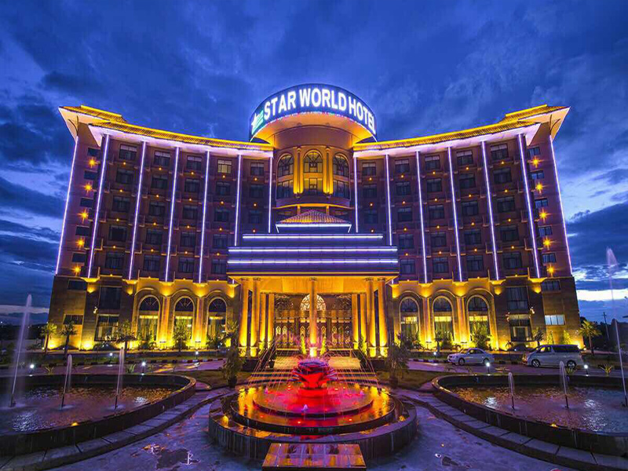
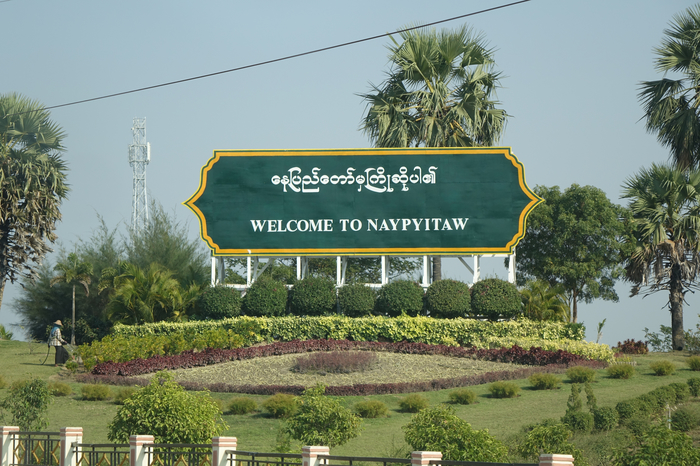
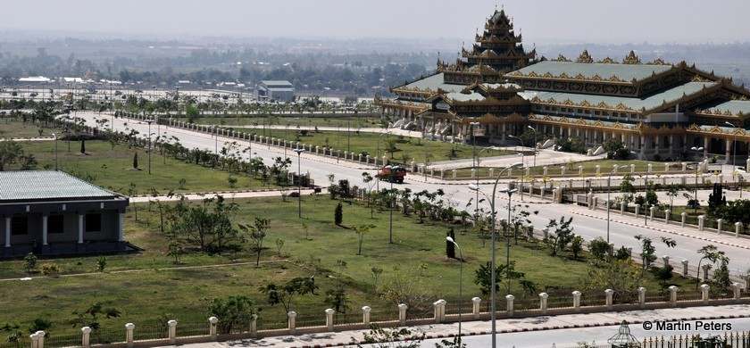
Nay Pyi Taw
|
|
Yangon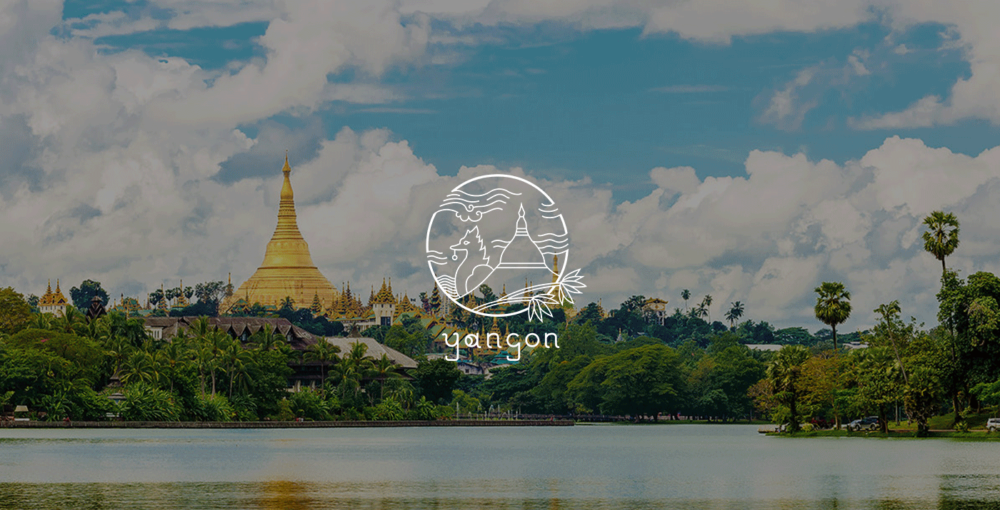 Air-pollution in downtown Yangon exceed international standards, city authorities have revealed. Air pollution is becoming more visible in Yangon and its effects can be seen through the city. Yangon's traffic congetion is a major factor in fouling the city's air,experts say. Speaking at an air quality seminar,Dr Than Htut,a retired head of the Occupatinal Health Unit,said it was the mosst important of three major causes of air pollution, the other two being electricity distribution and industry. Yangon began monitoring its air quality in 2007. In Yangon,air pollution sixty percent higheer than the World Health Organization's safety levels. |
|
MandalayAIR pollution in Mandalay is worse at night than day,according to studies."The Department of Environmental Conservation is carrying out the measurement of the air pollution 24 hours a day.Air pollution is worse at night, our studies have revealed" said Mandalay Region, environmental conservation department deputy director U Min Thein.Mandalay's Taungthaman Lake can become environmental conservation site.Conservationists are hoping that a government decision to designate Mandalay's Taungthaman lake an environmental coservation area could protect the marine life there.Water pollution is also a problem.Currently,clean potable water supply in Mandalay is only available in five townships. 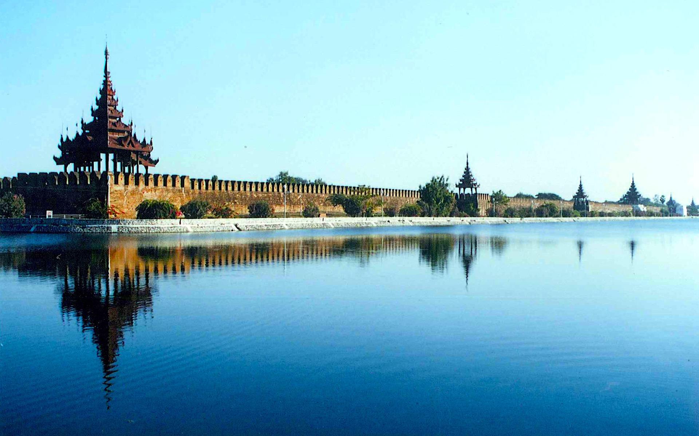
|
Pyin-Oo-LwinPyin Oo Lwin is a town full of trees and forest.It's weather is very pleasant.But now climate change and deforestation become a problem. Dr.Aung Khin represent Pyin Oo Lwin, due to rapid deforestation,its severest weather conditins in 2015 and 2016.That's why environmentalism grows in Pyin Oo Lwin. Fighting back against deforestatin and climate change, villagers in Pyin Oo Lwin have been organising groups to bring back to their communities.So far five villages have formed sein lan,or green space,conservation groups to preserve natural resources.We also fight against deforestation and climate change and also protect the mountain's natural resources,particularly its waterfalls,trees ans forests. 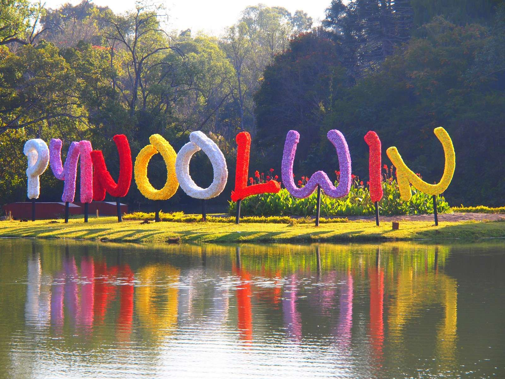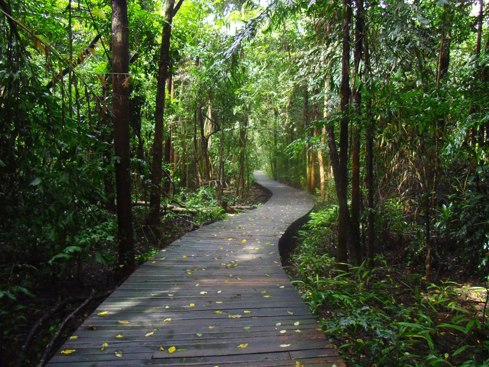
|
The Ayeyarwady DeltaThe Ayeyarwady Delta Region was the most threatened region,expericing an average annual deforestation rate of 1.2% from 1990-2000, a rate four times the national average.The Ayeyarwady Region has a population of 8 million people and is a large agricultural centre,accounting for about 35% of the country's rice production.As a result of agricultural expansion and the use of wood for fuel,mangrove cover declined 64.2% from 1978-2011 and countinues to disappear.Home to some of the most diverse mangrove forests,this deforestatin has significant repercussions both economically and environmentally. Mangroves provide protection from tropical cyclones,seasonal flooding ,and are crucial for the fishing industry that is an important livehood for much of the coast. 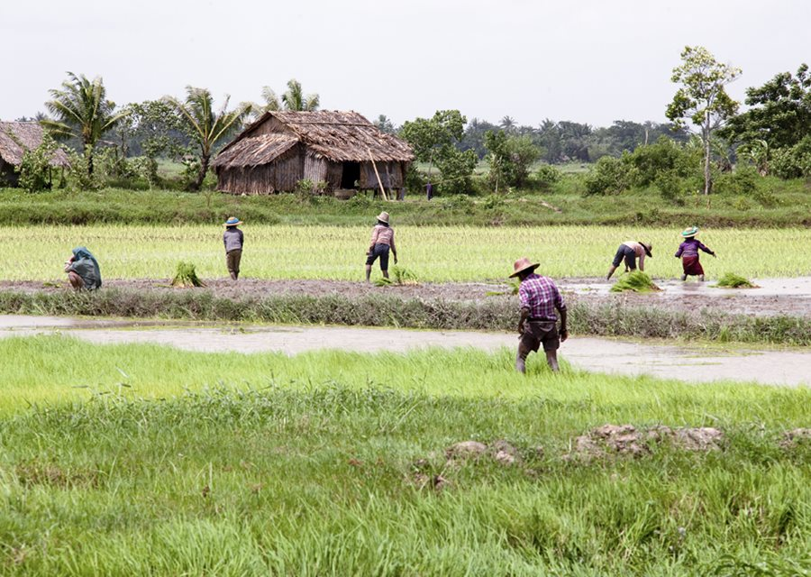
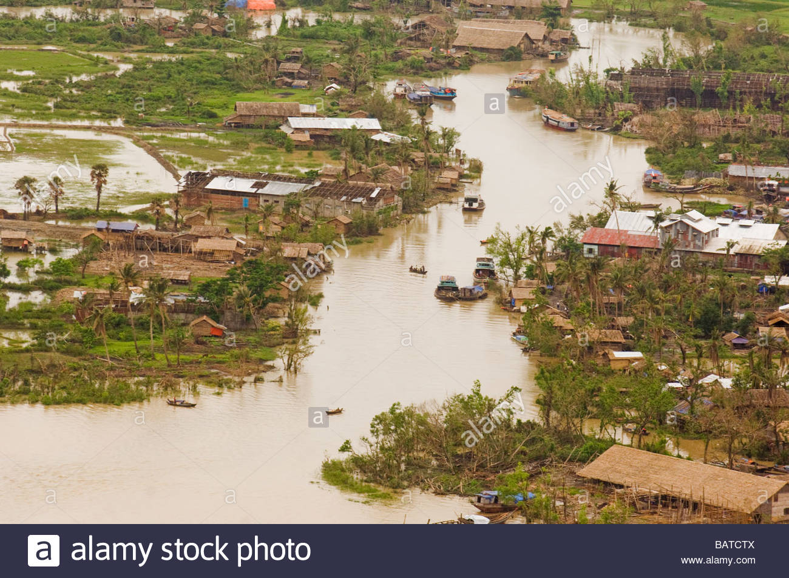
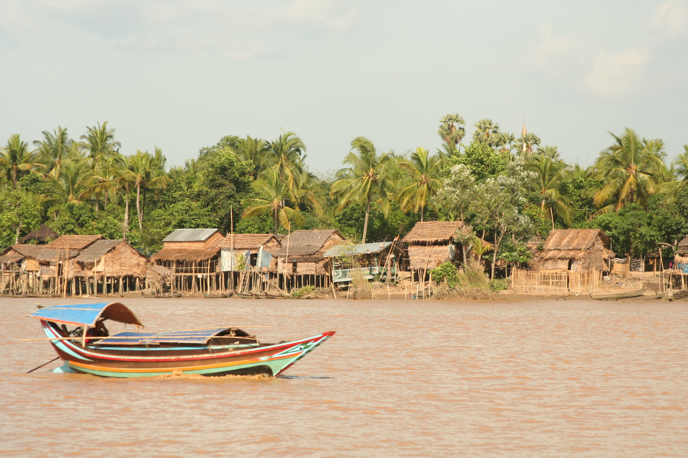
|
|
Chinese-Financed Copper Mine in Myanmar
The massive Monywa mine and Letpadaung copper mine project in the Sagaing region of northern Myanmar
is run by a bit of China North Industries Corp,a leading Chinese weapons manufacturer,under a deal signed in June 2010
after Canada's Ivanhoe Mines Ltd pulled out in 2007.It is backed by the military-owned Union of Myanmar Economic Holdings Ltd(UMEHL).
UMEHL has operated with impunity under Myanmar's military regime.
Many people in Myanmar-especially those living near it-oppose the mine because of the environmental damage it causes and the villagers
it displaces.The villagers complain of health problems and environmental destuction around the mine,including water tainted by chemicals,dying
cops,higher cacer rates and the loss of beneficial insects.In 2012,discontent swelled to political action as villagers and acitivsts staged
demonstrations-that in some cases were violently put down by Myanmar authorities-opposing a $1 billion expansion of the mine project that displaces
nearly 8,000 villagers.
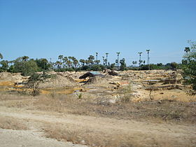
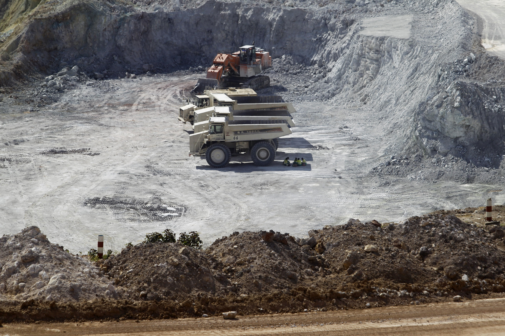
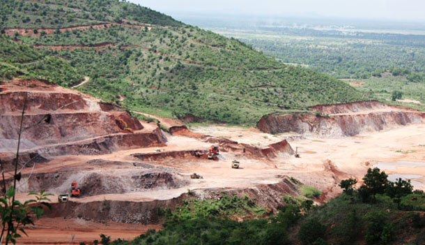
|
|